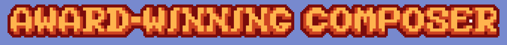
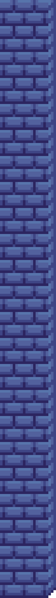

Much like its predecessor Undertale, Deltarune has one of the most famous video game soundtracks of the last decade, if not ever. The music for both games is almost entirely written by Toby Fox, their main creator, but in chapter 2 of Deltarune he collaborated with Lena Raine in several parts of the score. Some of the major songs of the chapter were composed with assistance from Lena, and she even composed one of them entirely on her own. Her influence in the music elevates it wonderfully, with her style blending delightfully with the game’s own.
Becoming a main composer for the number one best-selling video game of all time is undeniably an incredible achievement. With the beloved and critically-acclaimed music by C418 already in the game, Lena unquestionably had a big act to follow, but even so she knocked it out of the park. The atmosphere introduced by her score perfectly complements the adventurous feeling of Minecraft, and adds to the preceding music seamlessly. To be able to add to and improve an already great work is a true testament to the tremendous skill Raine possesses.
I think Lena Raine’s work in the game Celeste is the most important of her career thus far. The game is a story about a young transgender woman’s goal to climb the mystical mountain bearing the game’s name and, in the process, overcome and accept the parts of herself she hates the most. The game’s music wonderfully highlights and enhances every aspect of the narrative and gameplay, from major moments in the story, to the phenomenal precision platforming. Celeste is a beautiful and powerful experience that simply wouldn’t be complete with the soundtrack that Lena composed. I’m certainly not the only one who believes such, as the soundtrack received the American Society of Composers, Authors and Publishers Video Game Score of the Year award in 2019, as well as a nomination for Best Score/Music at The Game Awards 2018.
Lena Raine’s is a truly wonderful story. Over the course of her life, she has displayed a great passion for music, and she has pursued that passion to achieve wonderful things. Some people may look at what Raine has accomplished and dismiss it as insignificant. They may think that such a simple story isn’t particularly inspiring. However, I believe that regardless of her accomplishments, she still exemplifies something profoundly important: a dream so many of us aspire to. Lena Raine shows that it’s possible to live your life doing what you love as who you truly are.